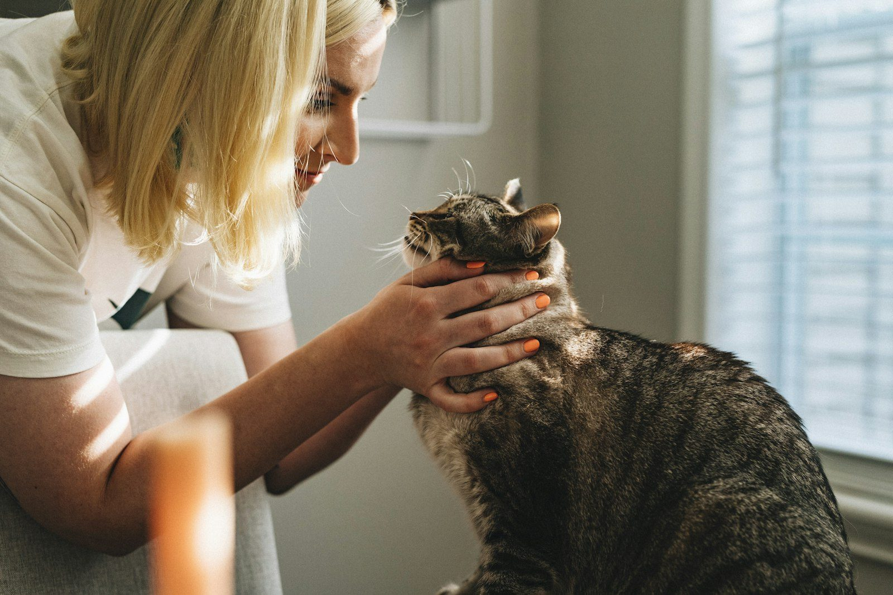

Valle de Guadiana, manzana 3, lote 3, C.P. 55238. Abierta todos los días de 9:00 a 20:00, según la ficha de Google.
Agendar por WhatsApp55 5711 3291No hay un tarifario oficial publicado. Estos son servicios habituales de una clínica veterinaria; confirma disponibilidad al llamar.
Revisión y seguimiento de perros y gatos. Consulta para confirmar disponibilidad.
Medicina preventiva habitual. Confirma el esquema al agendar.
Procedimientos quirúrgicos, según disponibilidad del equipo. Consulta para confirmar.
Internamiento cuando el caso lo requiera. Pregunta al llamar si está disponible.

La ficha pública ubica el consultorio en Valle de Guadiana, manzana 3, lote 3, colonia Sagitario 3. No se encontró un sitio web oficial propio. Esta página es un mockup.
No confundir con clínicas homónimas en otras ciudades (por ejemplo, Toluca o Campeche). El teléfono publicado es el 55 5711 3291.
✔ Horario publicado: 9:00 a 20:00, todos los días
✔ C.P. 55238, Sagitario 3
Calificación 4.1 ★ en Google
★★★★★
“Excelente”
★☆☆☆☆
“Merece cero estrellas, nisiquiera mvz solo la mama según, querían hacerle una operación carisima a mi pitbull cuando solo era una herida infectada, son unos cochinos, cero transparentes y no tratan bien a los perros, nisiquiera tienen bosales le amarraron con un lazo su ocico”
★★★★★
“Holaaa , solo para recomendarles esta clínica veterinaria , brinda un excelente servicio llevo a todas mis mascotas desde hace años , todo el personal tiene un trato humano e igualitario con cada paciente , lleve por primera vez a mi gato por que ya lo había llevado a otro lugar donde me dieron un mal diagnóstico , al llegar a este lugar en seguida le hicieron una revisión general a detalle , el doctor le realizo estudios y pudo concretar que mi gatito que en ese entonces tenía 4 meses tenía una obstrucción intestinal, por lo cual el doctor le realizó una operación llamada enterotomía de…”
★★★★★
“Excelente servicio, son médicos que saben lo que hacen y muestran empatía hacia tu mascota, recomiendo ampliamente 🙌🏻☺️”
Datos de contacto, horario y ubicación.
No se encontró un sitio oficial propio. Esta página es un mockup.
Según la ficha de Google, todos los días de 9:00 a 20:00.
Valle de Guadiana, manzana 3, lote 3, colonia Sagitario 3, C.P. 55238, Ecatepec de Morelos.
Al 55 5711 3291.
La ficha consultada muestra 4.1 de 5 a partir de 42 opiniones. La hoja del proyecto tenía 49.
📍 Dirección: Valle de Guadiana Mz. 3 Lt. 3, Sagitario 3, 55238 Ecatepec de Morelos, Méx.
📞 Teléfono: 55 5711 3291
| Lunes a domingo | 9:00 – 20:00 |
Llama o escribe por WhatsApp al 55 5711 3291 para confirmar horario y disponibilidad.
Agendar por WhatsApp